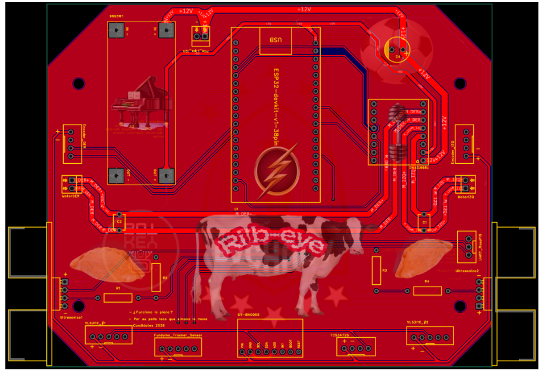
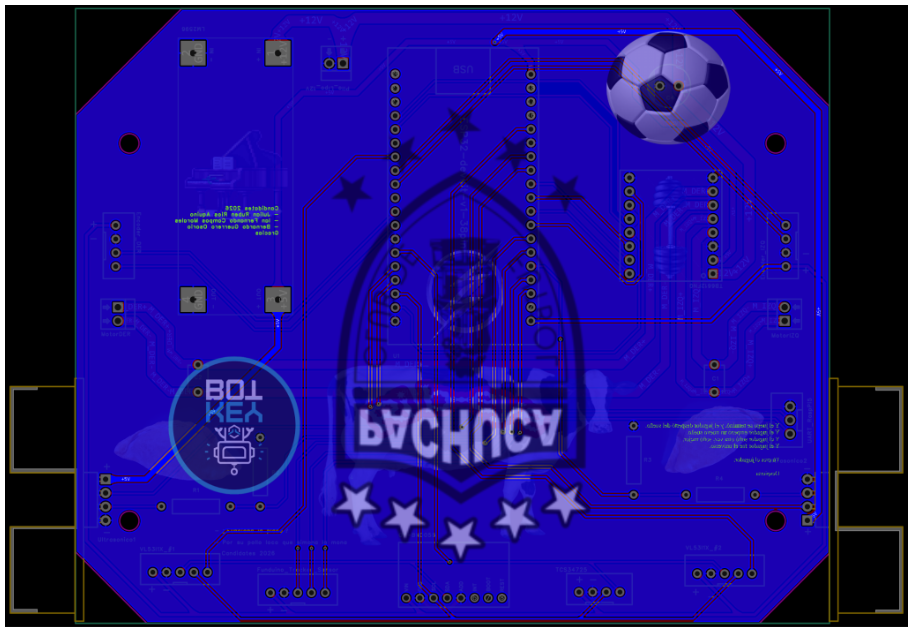

PCB
Semana 6 y 7
Con el esquemático final se diseñó la PCB que integra la ESP32, los conectores de los sensores y los módulos de control de motores.


PCB, capa superior (Top layer)


PCB, capa inferior (Bottom layer)
Pistas
Para definir el ancho de las pistas se investigó en foros cuáles eran las más usadas, y se implementó cada una según el voltaje que necesita. Además, los mentores mencionaron las reglas que se usan para calcular el ancho exacto de las pistas dependiendo del voltaje y, sobre todo, de la corriente que pasa por ellas.
Importante
Una pista muy delgada para la corriente que pasa por ella se puede calentar y dañar. Las pistas de potencia (motores y pilas) deben ser más anchas que las de señal.
Plano de tierra y vías
Se usó una capa de cobre como GND común, lo que facilitó las conexiones.
Se usaron bastantes puentes (vías) entre la capa superior (Top layer) y la inferior (Bottom layer).
Conectores
JST-XH para todos los sensores.
Borneras para los motores y las pilas.
Dupont para los módulos puente H y la ESP32.
Contorno de la placa
El contorno (outline) de la placa se hizo dentro del propio programa, porque en ese momento se desconocía la opción de importar un archivo DXF.
Truco
Si ya tienes el contorno de la placa diseñado en CAD (por ejemplo con el área de Mecánica), puedes importarlo como DXF para que los orificios coincidan con el chasis.
Detalles
En la placa se pusieron imágenes que hacen referencia a cada miembro del equipo y a nuestra querida Pachuca.
Soldadura y ensamble
La placa se pidió desde la semana 6 y se soldó en la semana 7. Se tuvieron que crimpar cables a las conexiones JST-XH, y se usaron dupont para los puentes H y la ESP32.